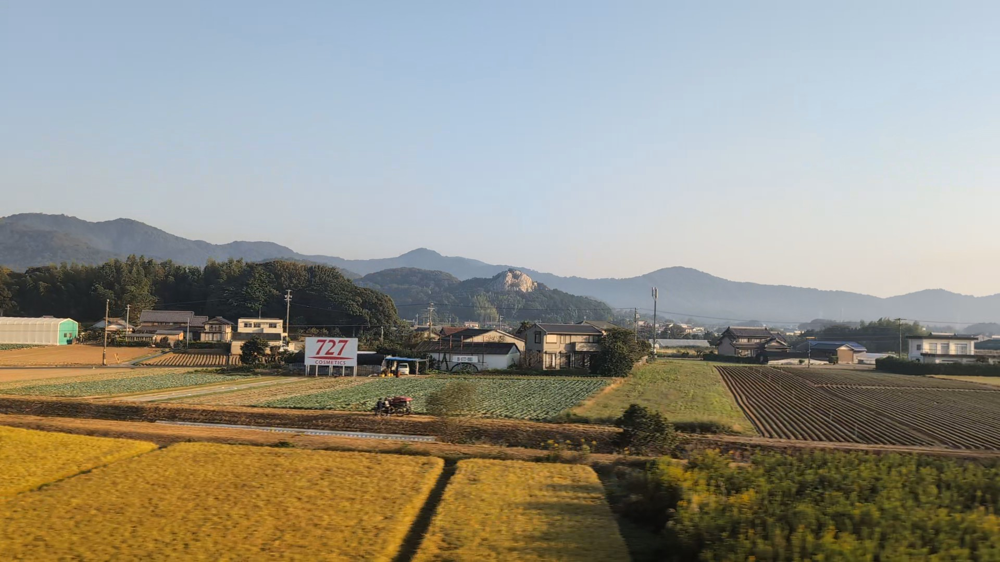

← 車窓の作品集MICHIKUSA PICTURES / 001
MEMORY EXPRESS
記憶特急
あの日の窓を、くぐる。
新幹線と、3枚の記憶。
PROLOGUE / 出発
街が、目を覚ます。
2026.10.13 — ある朝の記憶
EVERY WINDOW, A WORLD.
一瞬だった。ずっと残った。

3Dを表示できません。
下の写真で車窓をご覧ください。
DRONE
THREE WINDOWS, ONE MORNING
旅は、写真の向こうへ。
街を抜け、列車を追い、窓の中へ。
10月13日の朝に撮った、3つの景色。
この作品について
写真：michikusa / 2026年10月13日撮影（動画からの切り出し）。米原の写真には走行中のぶれがあります。表示時刻は元記録からの推定です。
街と線路は演出のための架空の風景です。写真の場所を3Dで再現したものではありません。新幹線と窓枠をBlenderで造形し、Three.jsで描画。音はこの作品用の合成音です。音はONにした場合だけ再生します。
一時停止・シークに対応。キーボードでは再生ボタンとスライダーを操作できます。端末の「視差効果を減らす」設定にかかわらず、自動再生はせず、再生操作から始まります。全画面はEscapeで戻れます。